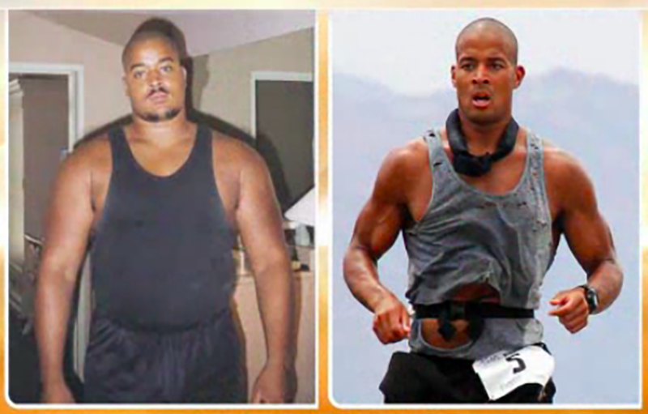

i wrodzoną wadę serca, którego wydolność to realnie 25%?
Co robisz gdy:
masz lęk wysokości
boisz się wody
i nie cierpisz aerobów?
Jak to co robisz? Zostajesz Navy SEALsem, czyli komandosem amerykańskiej marynarki wojennej, przechodzisz jednocześnie (jako jedyny człowiek w historii USA) selekcję do Rangersów (z wyróżnieniem) i jednostek specjalnych amerykańskiego lotnictwa. No i – oczywiście – bez przygotowania i bez żadnego zespołu, zaczynasz biegać ultramaratony: po 160 km i więcej. Żeby nie było nudno i żeby nie poświęcać się jedynie treningowi wytrzymałościowemu, trafiasz w 2013 roku do księgi Rekordów Guinessa za 4025 podciągnięć wykonanych w ciągu 24h. Jego pierwszy ultra-maraton? W celach charytatywnych. 160 km i 24 godziny. We wtorek się zapisuje, w sobotę już biegnie. Zero przygotowania (nie biegał od roku), nadwaga, żadnego zespołu. Tylko żona, składane krzesełko, butelka wody i paczka krakersów. Myślał, że jedzenie i picie zapewniają organizatorzy. Mylił się. Po kilkunastu kilometrach biegnie już z popękanymi kośćmi w stopach. Po 110 kilometrach siada i nie ma siły pójść do toalety. Więc sika po nogach. Krwią, bo wysiadają mu nerki. Zostało mu około 12 godzin i około 50 kilometrów. Zdobywa jakoś jedzenie. Zdobywa jakoś picie. Kończy wyścig. 21 godzin i 21 minut.Poznaj Davida Gogginsa – gościa,który nauczy cie żelaznej twardości, który byłby marzeniem starożytnych Greków oraz Fryderyka Nietzsche z jego koncepcją nadczłowieka. Który ze słabego, zakompleksionego i sponiewieranego przez życie czarnego chłopaka nękanego przez Ku-Klux-Klan stał się najtwardszym sportowcem na świecie.
"Byłem zakompleksionym, przerażonym dzieciakiem i jednym sposobem, by z tym skończyć było celowe przejście przez rzeczy najgorsze z możliwych. Najlepsze co mi się przydarzyło to fakt, że nikt nie chciał mi pomóc. Nikt się nade mną nie użalał. Nikogo to nie obchodziło"
"Jedynym sposobem dotarcia na drugi, lepszy brzeg jest CIERPIENIE w celu wzrastania. MUSISZ CIERPIEĆ BY ROSNĄĆ. I to Ty musisz zainicjować tę podróż. I może być cholernie ciężko, ale musisz to zrobić."
"Wiesz przed czym uciekamy? Uciekamy przed PRAWDĄ. A jedynym sposobem by odnieść sukces jest BIEG W STRONĘ PRAWDY. Niezależnie od tego jak bolesny i brutalny. Ale to Cię zmieni. (...) Dlaczego obawiam się własnego cienia?’ Wystaw swój tyłek na skopanie, rób to czego nie cierpisz i rób rzeczy, z którymi nie czujesz się komfortowo każdego dnia swojego życia.”
„Dziś ludzie są tak słabi, że ich wolę możesz złamać w ułamku sekundy. 'Grubas z ciebie!’ – mówisz. 'O mój Boże, biedny ja…’ – rozpaczają. Łamiesz ich w chwilę. Mówisz to takiemu miśkowi a on nie może się potem pozbierać do końca życia. Dlaczego? Dlatego że nie wiedzą jak to odwrócić, jak czerpać z tego energię, motywację i pasję do tego, by stać się silniejszymi. By stać się wielkimi.”
Goggins wie co mówi:

Pragnąc zaczerpnąć opini społeczeństwa, pytam Cię drogi czytelniku co myślisz na temat powyższego fragmentu:
"Podczas ostatnich 50 km tego 160 kilometrowego biegu zdałem sobie sprawę, że bycie człowiekiem wcale nie musi być aż tak bardzo ludzkie. Jeśli JESTEŚ GOTOWY NA CIERPIENIE możesz trafić do tego specjalnego mentalnego miejsca, gdzie ciało łączy się z umysłem i przestaje istnieć to, co niemożliwe"
"Nie kończę gdy się zmęczę. Kończę gdy już wszystko skończę."
Zejdź do środka:
„Wszystko co kiedyś robiłem służyło temu, by ktoś inny mnie polubił. Kłamałem tylko po to, żeby mnie lubili. Ale aby wyzdrowieć nie potrzebujesz czytać czyichś książek. Potrzebujesz zajrzeć do własnej wewnętrznej księgi.”
„Tak bardzo chciałem być lubianym i akceptowanym przez innych, że stworzyłem w sobie rożne osobowości. Chciałem imponować zwykłym, przeciętnym ludziom. Rozumiesz? Podkreślam: zwykłym i przeciętnym. Tylko po to, żeby mnie polubili! Czy może być coś bardziej żenującego?! Ale była jedna osoba, której nie mogłem oszukać – ta w lustrze. Więc patrząc w nie, codziennie, mówiłem do siebie: 'Aleś żenujący. Jesteś po prostu żałosny!’ Więc zacząłem od siebie wymagać, brać za siebie odpowiedzialność."
"Pierwszy błąd jaki popełniłem to pozwolenie światu by ukształtował to kim jestem i to jak myślę."
"Masz WIERZYĆ tylko w jedno i to jedno to Ty. Nie znajdziesz wielkości w kolejnej książce – ani nawet słuchając mnie. Ja mogę być iskrą, ale MUSISZ ZEJŚĆ DO ŚRODKA. A to oznacza, że MUSISZ SIĘ WYCISZYĆ."
„Celem tej podróży jest odnalezienie spokoju. Kiedy go odnajdziesz, zaczynasz nową podróż. Dziś wiem już ze 100% pewnością, że mogę osiągnąć dowolny cel. Pewnie potknę się z milion razy po drodze ale mogę Ci zagwarantować, nawet gdyby zajęło mi to 20 lat, że DOPNĘ swego. Bo JA wiem, że MOGĘ, ja WIEM, że ZNAJDĘ sposób.”
„Ludzie o miękkiej psychice napawają mnie obrzydzeniem. Umierają dokładnie takimi samymi jakimi zostali ukształtowani.”
„Jak możesz nauczyć się czegoś o sobie jeśli ktoś zamiast mówić Ci prawdę owija wszystko w bawełnę? Dobieramy słowa, żeby nikogo nie urazić bo skóra jest zbyt wrażliwa. Ogarnijcie się. Mogą cię nazywać czarnuchem, ale czy pozwolisz im na to by rządzili twoim życiem? Jak zamierzasz to odwrócić i przerobić w energię? Jak? Poprzez gruboskórność. Zacznij być prawdziwym człowiekiem i przestań bać się własnego odbicia w lustrze. Bo to jedyna rzecz, której możesz się obawiać. Jeśli przestaniesz bać się odbicia w lustrze, udało Ci się.”
"Obecne młode pokolenie poddaje się chwilę po tym jak zacznie. Tak łatwo być dziś wielkim – bo ludzie są tak bardzo słabi. Jeśli masz w sobie choćby gram twardości, samodyscypliny, choćby ciut umiejętności robienia rzeczy na które nie masz ochoty, to masz nadzwyczajną przewagę. (...) Bo na tym polega życie – że nie zawsze robisz to na co masz ochotę. To właśnie dzięki temu stałem się KIMŚ.”
„Po drugiej stronie robienia tego czego cholernie nie chcesz robić czeka na Ciebie wielkość. Ale ludzie tego nie rozumieją. Ludzie nie rozumieją koncepcji odcisków ma umyśle. Ludzie nie rozumieją, że kiedy ćwiczę do biegu to nie ćwiczę do biegu tylko szykuję się do życia. (...) Hartuję mój umysł, ducha i ciało, by stały się jednością, bym mógł poradzić sobie w najtrudniejszych wypadkach."
Mentalność wojownika:
„Mentalność wojownika to zupełnie inna mentalność. Stoisz przed drzwiami, za którymi mogą być źli ludzie, albo ładunek-pułapka, który urwie ci nogi i musisz być gotowy by umrzeć. Wszystko co robisz jako SEALs może prowadzić do śmierci. Akceptujesz to, że możesz nie przeżyć. To czyni Cię wojownikiem. Bo wojownik który boi się śmierci to martwy wojownik.”
I na koniec:
„Nie możesz pozwolić sobie na bycie tchórzem. Nienawidziłem skoków ze spadochronem, strzelania i ogólnie pracy jako Navy SEALs. Ale robiłem to bo to była droga do zmiany mnie. Praktycznie nie zdarza mi się robienie rzeczy, z którymi czuję się dobrze."